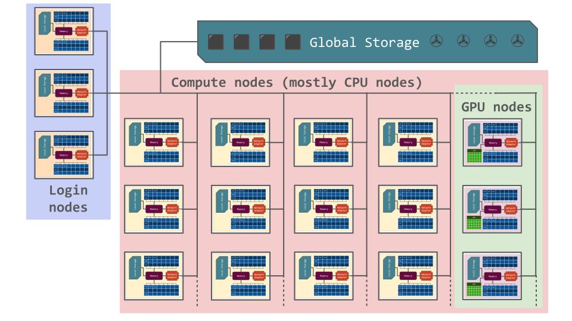

Introduction to clusters¶
This section is a beginner’s guide to clusters, and provides general information about computer clusters like Tetralith, Dardel, Alvis, Cosmos, Pelle, Kebnekaise and other HPC systems, but is not directly focused on any of them.
What is a cluster¶
A computer cluster consists of a number of computers (few or many), linked together and working closely together. In many ways, the computer cluster works as a single computer. Generally, the component-computers are connected to each other through fast local area networks (LANs).
The advantage of computer clusters over single computers, are that they usually improves the performance (and availability) greatly, while still being cheaper than single computers of comparable speed and size.

What are Nodes, Cores, and CPUs?¶
A node is the name usually used for one unit (usually one computer) in a computer cluster. Generally, this computer will have one or two central processing units, or CPUs, each normally with (many) more than one core. Each core is a single processor able to handle a single programmed task. Memory is always shared between cores on the same CPU, but generally not between the CPUs. Computer nodes can also have GPUs (graphical processing units) in addition to the CPUs.
Nodes in computer clusters are usually arranged in racks at a dedicated climate- controlled facility, and are connected via a communication network. With few exceptions, nearly all high-performance computer clusters use the Linux operating system. Normally, clusters have some sort of batch or queuing system to handle scheduling of jobs. On Linux systems, that batch or queuing system is most often Slurm (the Simple Linux Utility for Resource Management).
What is a Supercomputer? Is it the same as a Cluster?¶
A supercomputer is simply a computer with a processing capacity (generally calculation speed) several orders of magnitude better than a typical personal computer. For many years, supercomputers were single computers with many CPUs and usually large volumes of shared memory—sometimes built specifically for a certain task. They have often been custom-built machines, like Cray, and still sometimes are. However, since desktop computers have become cheaper, most supercomputers today are made up of many “off the shelf” ordinary computers connected in parallel.
A supercomputer is not the same as a computer cluster, though a computer cluster is often a supercomputer.
How is a job run on a computer cluster? What is a batch system?¶
In general, jobs are run with a batch- or queuing system. There are several variants of these, with the most common working by having the user log into a “login node” and then assembling and submitting their jobs from there.
A “job script” (also called a “submission script”) will typically be used to start a job. A job script is essentially a list of commands to the batch system telling it things like: - how many nodes to use, - how many CPU and/or GPU cores, - how much memory to allocate, - how long to run (maximum), - the program name, - any input data, etc.
When the job has finished running, it should have produced some files, like output data, perhaps error messages, etc. The syntax of job scripts depends on the queuing system, but that system is so often Slurm that you may see the terms “job script” and “slurm script” used interchangeably.
Since jobs are queued internally and will run whenever the resources for them become available, programs requiring any kind of user interaction are usually not recommended (and often not possible) to be run via a job script. There are special programs like Open On-Demand and GfxLauncher that allow graphical programs to be run as scheduled jobs on some HPC clusters, but it is up to the administrators to decide which programs can be run with these tools, how they should be configured, and what options regular users will be allowed to set.
Which programs can be run effectively on a computer cluster?¶
Computer clusters are made up of many interconnected nodes, each with a limited number of cores and limited memory capacity. The main way an HPC cluster lets you speed up computations is by letting you execute several tasks in parallel. In other words, a problem must somehow be split into many tasks to gain any speed-up.
Many serial jobs¶
Running many independent tasks can be done faster on a computer cluster. No special programming is needed, but you can only run on one core for each task. It is good for long-running single-threaded jobs. This type of workflow is good for problems like parameter sweeps, where the same code is run repeatedly with different inputs.
A job scheduler is used to control the flow of tasks. Using a small script, many instances of the same task (like a program run many times, each with slightly different parameters) can be set up. The tasks will be put in a job queue, and will run as free spaces open up in the queue. Normally, the tasks will run many at a time, since they are serial, which means each only uses one core.
Example
You launch 500 tasks (say, run a small program for 500 different temperatures). There are 50 cores on the machine in our example, that you can access. Fifty instances are started and then run, while the remaining 450 tasks wait. When the running programs finish, the next 50 will start, and so on.
It will be is as if you ran on 50 computers instead of one, and you will finish in 1/50th of the time.
Of course, this is an ideal example. In reality there may be overhead, waiting time between batches of jobs, etc. so the speed-up will not be as great, but it will certainly run faster.
Parallelization¶
Parallelization can be done in several ways:
- Inside a node: threaded/shared memory
- Across several nodes: distributed parallelism (generally done with MPI or similar.)
- Some combination of threaded and distributed parallelism (hard)
Which is best depends on the size of each parallel process and whether or to what extent the processes have to communicate.
What kinds of programs can be parallelized?¶
For a problem to be parallelizable, it must be possible to split it into smaller sections that can be solved independently of each other and then combined.
What happens in a parallel program is generally the following:
- A “master” process is created to control the distribution of data and tasks.
- The “master” sends data and instructions to one or more “worker” processes that do the calculations.
- The “worker” processes then send the results back to the “master”.
- The “master” combines the results and/or may send out further subsections of the problem to be solved.
Examples of parallel problems:
- Sorting
- Rendering computer graphics
- Computer simulations comparing many independent scenarios, like climate models
- Matrix Multiplication
Shared memory/thread parallelism¶
Shared memory is memory that can be accessed by several programs at the same time, enabling them to communicate quickly and avoid redundant copies. Shared memory generally refers to a block of RAM accessible by several cores in a multi-core system. Computers with large amounts of shared memory and many cores per node are well suited for threaded programs, using OpenMP or similar.
Computer clusters built up of many off-the-shelf computers usually have smaller amounts of shared memory and fewer cores per node than custom-built single supercomputers. This means they are more suited for programs using MPI than OpenMP. However, the number of cores per node is going up and many-core chips are now common. This means that OpenMP programs as well as programs combining MPI and OpenMP are often advantageous.
Distributed parallelism¶
While shared memory parallelism works well inside a node, you need distributed parallelism if you want to scale to more cores than are in a node.
This is often done with MPI (Message Passing Interface) libraries. Processes/workers exchange information by sending and receiving messages/data. They can also share some memory.
You need to write your code so it uses MPI or use software that is already prepared for it.
Hybrid parallelism¶
Sometimes code can be more efficient when using both OpenMP and MPI. This is called hybrid parallelism.
GPUs¶
Many computer clusters have GPUs in several of their nodes that jobs may take advantage of.
Originally, GPUs were used for computer graphics, but now they are also used extensively for general-purpose computing (GPGPU computing).

GPU-driven parallel computing is, among other things, used for:
- scientific modeling
- machine learning
- graphical rendering
and other parallelizable jobs.
Difference between CPUs and GPUs¶
CPUs (Central Processing Units) are latency-optimized general-purpose processors designed to handle a wide range of distinct tasks sequentially.
GPUs (Graphics Processing Units) are throughput-optimized specialized processors designed for high-end parallel computing.
Whether you should use a CPU, a GPU, or both depends on the specifics of the problem you are solving.
Using GPUs¶

Programs must be written especially for GPUs in order to use them.
Several programming frameworks handle the graphical primitives that GPUs understand, like CUDA (Compute Unified Device Architecture), OpenCL, OpenACC, HIP, etc.
In addition to the above programming frameworks, you often have the option to use software that is already prepared for use on GPUs. This includes many types of MD software, Python packages, and others.